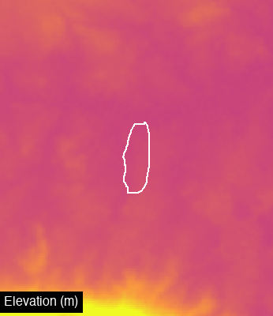

import ee
ee.Authenticate()
ee.Initialize(project='hs-brazilreforestation')visualize
Generic spatial visualization: render any ee.Image, export PNGs, GIFs, and timestrips.
Visualization Parameters
A simple wrapper for GEE visualization parameters.
VisParams
def VisParams(
min:Optional=None, max:Optional=None, palette:Optional=None, bands:Optional=None, gamma:Optional=None
)->None:
Visualization parameters for rendering layers.
Examples: # For single-band continuous data (NDVI, temperature) VisParams(min=-0.2, max=0.8, palette=[‘red’, ‘yellow’, ‘green’])
# For RGB composites
VisParams(min=0, max=0.3, bands=['B4', 'B3', 'B2'], gamma=1.4)
# For categorical data
VisParams(min=0, max=7, palette=['#111', '#ccc', '#0f0', ...])Core Rendering Functions
These are the building blocks - they work with any ee.Image.
render_thumbnail
def render_thumbnail(
image:Image, region:Geometry, vis_params:dict, dimensions:int=512, format:str='png'
)->bytes:
Render an ee.Image to thumbnail bytes.
Args: image: The image to render region: Region to render vis_params: Visualization parameters dict dimensions: Max dimension in pixels format: Image format (‘png’ or ‘jpg’)
Returns: Image bytes
add_label
def add_label(
img:Image, label:str, position:Literal='bottom-left', font_size:int=16, text_color:str='white',
bg_color:str='black', padding:int=5
)->Image:
Add a text label to an image.
Generic Image Rendering
The core render_image function works with any ee.Image.
render_image
def render_image(
image:Image, region:Geometry, vis_params:Union, dimensions:int=512, boundary:Optional=None,
boundary_color:str='#FFFFFF', boundary_width:int=2, label:Optional=None, label_position:str='bottom-left'
)->Image:
Render any ee.Image to a PIL Image.
This is the core generic rendering function. It works with any ee.Image from any source (Sentinel, MODIS, Landsat, custom computations, etc.).
Args: image: Any ee.Image to visualize region: Region to render (usually site.geometry.buffer(n).bounds()) vis_params: Visualization parameters (VisParams or dict) dimensions: Image size in pixels boundary: Optional geometry to overlay as boundary line boundary_color: Color for boundary line boundary_width: Width of boundary line label: Optional text label label_position: Position for label
Returns: PIL Image
Example: # Get any ee.Image from any source image = ee.Image(‘USGS/SRTMGL1_003’) # elevation
# Render it
pil_img = render_image(
image=image,
region=site.geometry.buffer(1000).bounds(),
vis_params={'min': 0, 'max': 3000, 'palette': ['green', 'yellow', 'brown']},
boundary=site.geometry,
label='Elevation'
)Layer-Based Rendering
Convenience functions for rendering CategoricalLayer and ContinuousLayer objects.
get_image_for_layer
def get_image_for_layer(
layer:Union, geometry:Geometry, year:Optional=None, date_range:Optional=None, reducer:str='median'
)->Image:
Get an ee.Image from a CategoricalLayer or ContinuousLayer.
get_vis_params_from_layer
def get_vis_params_from_layer(
layer:CategoricalLayer
)->dict:
Extract visualization params from a CategoricalLayer’s palette.
render_site_layer
def render_site_layer(
site:Site, layer:Union, year:Optional=None, date_range:Optional=None, vis_params:Union=None, buffer_m:float=500,
dimensions:int=512, show_boundary:bool=True, boundary_color:str='#FFFFFF', boundary_width:int=2,
label:Optional=None, label_position:str='bottom-left'
)->Image:
Render a CategoricalLayer or ContinuousLayer for a site.
This is a convenience wrapper around render_image() for Layer objects.
Generic Export Functions
These work with any rendering function via a “frame generator” pattern.
export_frames_as_strip
def export_frames_as_strip(
frames:list, output_path:Union, orientation:Literal='horizontal', spacing:int=2, background_color:str='#000000'
)->Path:
Export a list of PIL Images as a strip (side by side).
Args: frames: List of PIL Images (should be same size) output_path: Output file path orientation: ‘horizontal’ or ‘vertical’ spacing: Pixels between tiles background_color: Background color
Returns: Path to saved file
export_frames_as_gif
def export_frames_as_gif(
frames:list, output_path:Union, duration_ms:int=500, loop:bool=True
)->Path:
Export a list of PIL Images as animated GIF.
Args: frames: List of PIL Images output_path: Output file path duration_ms: Frame duration in milliseconds loop: Whether to loop
Returns: Path to saved file
High-Level Export Functions
Convenient wrappers for common use cases with Layer objects.
export_layer_timestrip
def export_layer_timestrip(
site:Site, layer:Union, output_path:Union, years:list, vis_params:Union=None, buffer_m:float=500,
tile_size:int=256, show_boundary:bool=True, boundary_color:str='#FFFFFF', add_labels:bool=True,
orientation:Literal='horizontal', spacing:int=2
)->Path:
Export a Layer time series as timestrip.
export_layer_gif
def export_layer_gif(
site:Site, layer:Union, output_path:Union, years:list, vis_params:Union=None, buffer_m:float=500,
dimensions:int=512, show_boundary:bool=True, boundary_color:str='#FFFFFF', duration_ms:int=500,
add_labels:bool=True
)->Path:
Export a Layer time series as animated GIF.
Example Usage
from gee_polygons.site import load_sites
from gee_polygons.datasets.mapbiomas import MAPBIOMAS_DEFREG
sites = load_sites('../data/restoration_sites_subset.geojson')
site = sites[8]
print(site)Site(id=9368, start_year=2012)Using Layer objects (CategoricalLayer, ContinuousLayer)
# Render a categorical layer
img = render_site_layer(
site=site,
layer=MAPBIOMAS_DEFREG,
year=2015,
buffer_m=500,
dimensions=400,
label='2015'
)
# Save single frame as PNG
img.save('../outputs/defreg_2015.png')
img
# Export as timestrip (PNG)
export_layer_timestrip(
site=site,
layer=MAPBIOMAS_DEFREG,
output_path='../outputs/defreg_timestrip.png',
years=[2010, 2012, 2014, 2016, 2018, 2020],
buffer_m=500,
tile_size=200
)
# Export as animated GIF
export_layer_gif(
site=site,
layer=MAPBIOMAS_DEFREG,
output_path='../outputs/defreg_timelapse.gif',
years=range(2010, 2021),
buffer_m=500,
dimensions=300,
duration_ms=600
)
from IPython.display import Image as IPImage
IPImage('../outputs/defreg_timestrip.png')
Using generic render_image with any ee.Image
For custom imagery or datasets not wrapped in Layer objects:
site = sites[0]# Example: Render elevation data
elevation = ee.Image('USGS/SRTMGL1_003')
img = render_image(
image=elevation,
region=site.geometry.buffer(2000).bounds(),
vis_params={'min': 0, 'max': 500, 'palette': ['#0d0887', '#7e03a8', '#cc4778', '#f89540', '#f0f921']},
dimensions=400,
boundary=site.geometry,
label='Elevation (m)'
)
img
# Example: Sentinel-2 using the dataset helper
from gee_polygons.datasets.sentinel2 import get_sentinel_composite, SENTINEL_VIS
s2_image = get_sentinel_composite(
geometry=site.geometry,
date_range=('2020-06-01', '2020-08-31')
)
img = render_image(
image=s2_image,
region=site.geometry.buffer(500).bounds(),
vis_params=SENTINEL_VIS,
dimensions=400,
boundary=site.geometry,
label='Sentinel-2 2020'
)
img
Sentinel-2 Timestrip (2018-2024)
Create a side-by-side comparison of dry season Sentinel-2 composites across multiple years.
# Sentinel-2 timestrip: dry season composites 2018-2024
from gee_polygons.datasets.sentinel2 import get_sentinel_composite, SENTINEL_VIS
frames = []
for year in range(2018, 2025):
# Get dry season composite (June-August)
s2_image = get_sentinel_composite(
geometry=site.geometry,
date_range=(f'{year}-06-01', f'{year}-08-31'),
cloud_pct=20
)
# Render to PIL Image with label
frame = render_image(
image=s2_image,
region=site.geometry.buffer(500).bounds(),
vis_params=SENTINEL_VIS,
dimensions=200,
boundary=site.geometry,
label=str(year)
)
frames.append(frame)
# Export as horizontal strip
export_frames_as_strip(frames, '../outputs/sentinel_2018_2024.png')
from IPython.display import Image as IPImage
IPImage('../outputs/sentinel_2018_2024.png')
# Also export as animated GIF
export_frames_as_gif(frames, '../outputs/sentinel_2018_2024.gif', duration_ms=700)Path('../outputs/sentinel_2018_2024.gif')